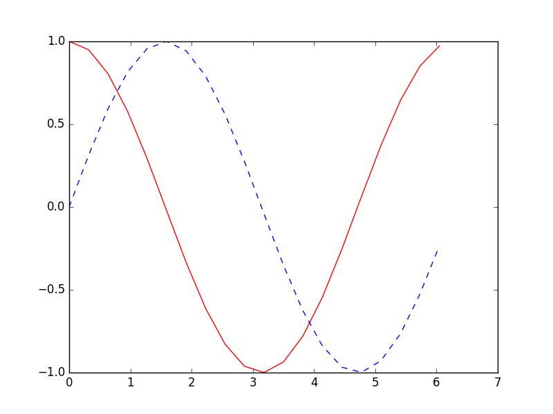

RNN Regressor 循环神经网络
作者: Mark JingNB 编辑: 莫烦 2016-10-30
学习资料:
生成序列
这次我们使用RNN来求解回归(Regression)问题.
首先生成序列sin(x),对应输出数据为cos(x),设置序列步长为20，每次训练的BATCH_SIZE为50.
def get_batch():
global BATCH_START, TIME_STEPS
# xs shape (50batch, 20steps)
xs = np.arange(BATCH_START, BATCH_START+TIME_STEPS*BATCH_SIZE).reshape((BATCH_SIZE, TIME_STEPS)) / (10*np.pi)
seq = np.sin(xs)
res = np.cos(xs)
BATCH_START += TIME_STEPS
return [seq[:, :, np.newaxis], res[:, :, np.newaxis], xs]

搭建模型
然后添加LSTM RNN层，输入为训练数据，输出数据大小由CELL_SIZE定义。因为每一个输入都对应一个输出，所以return_sequences=True。
每一个点的当前输出都受前面所有输出的影响，BATCH之间的参数也需要记忆，故stateful=True
model.add(LSTM(
batch_input_shape=(BATCH_SIZE, TIME_STEPS, INPUT_SIZE), # Or: input_dim=INPUT_SIZE, input_length=TIME_STEPS,
output_dim=CELL_SIZE,
return_sequences=True, # True: output at all steps. False: output as last step.
stateful=True, # True: the final state of batch1 is feed into the initial state of batch2
))
最后添加输出层，LSTM层的每一步都有输出，使用TimeDistributed函数。
model.add(TimeDistributed(Dense(OUTPUT_SIZE)))
训练
设置优化方法，loss函数和metrics方法之后就可以开始训练了。
训练501次，调用matplotlib函数采用动画的方式输出结果。
for step in range(501):
# data shape = (batch_num, steps, inputs/outputs)
X_batch, Y_batch, xs = get_batch()
cost = model.train_on_batch(X_batch, Y_batch)
pred = model.predict(X_batch, BATCH_SIZE)
plt.plot(xs[0, :], Y_batch[0].flatten(), 'r', xs[0, :], pred.flatten()[:TIME_STEPS], 'b--')
plt.ylim((-1.2, 1.2))
plt.draw()
plt.pause(0.1)
if step % 10 == 0:
print('train cost: ', cost)
如果你觉得这篇文章或视频对你的学习很有帮助, 请你也分享它, 让它能再次帮助到更多的需要学习的人. 莫烦没有正式的经济来源, 如果你也想支持 莫烦Python 并看到更好的教学内容, 赞助他一点点, 作为鼓励他继续开源的动力.